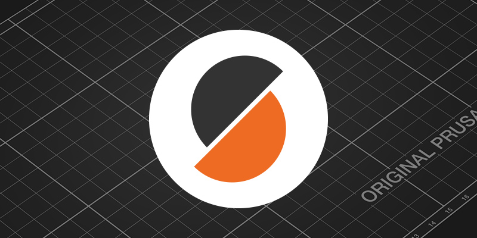
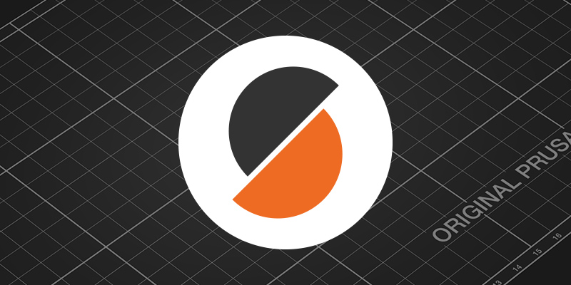

Markmið
Markmið verkefnisins var að hanna 3D módel af hlut sem ekki hægt væri að framleiða með frádráttar framleiðslu og væri úr að hámarki 100g af platsti.
Hér verður fjallað um verkefni þar sem ég hannaði 3D módel sem ég 3D prentaði með Prusa MK3+. Einnig átti að 3D skanna einhvern hlut og ákvað ég að skanna rafmagnsgítarinn minn.
Markmið verkefnisins var að hanna 3D módel af hlut sem ekki hægt væri að framleiða með frádráttar framleiðslu og væri úr að hámarki 100g af platsti.
Mig langaði að hanna eitthvað sem gæti nýst mér hversdagslega. Mér datt í hug standur sem gæti haldið uppi spjaldtölvunni minni þegar ég nota hana sem aukaskjá með fartölvunni minni í skólanum. Einnig myndist slíkur standur nýtast vel þegar ég er að horfa á t.d. bíómyndir í flugi þegar skjár er ekki í boði.
Ég fann þessa mynd og ákvað að gera eitthvað svipað. Innblásturinn má náglast á þessum link.
Í þessu verkefni ákvað ég að nota Fusion 360 til að teikna upp hlutinn. Vanalega myndi ég nota Inventor til að teikna en þegar ég gerði verkefnið hafði ég einungis aðgang að Apple tölvu svo það var ekki í boði. Einnig þurfti ég að ná í PrusaSlicer forritið fyrir 3D prentarann.
 

Teikningin var í sjálfu sér mjög einföld. Ég byrjaði að teikna rétthyrning sem var 13 cm x 8 cm og extrude-aður í 1 cm.
Síðan teiknaði ég á hliðarnar tvö "notch" sem voru jafn breið og spjaldtölvan sem á að fara passa þar ofan í.
Annað hallaði 120° og hitt 110° og þannig get ég valið á milli tveggja halla á spjaldtölvunni eftir því sem hentar best.
Síðan notaði ég cut fítusinn í extrude og hluturinn var tilbúinn. Að lokum vistaði ég teikninguna sem .stl skrá.
Í PrusaSlicer opnaði ég .stl skránna mína með að fara í "Add" og valdi skrána mína.
Þá var hluturinn kominn inn.
Síðan ýtti ég á "Slice now" (rauða örin á myndinni fyrir ofan) og vistaði skránna á SD kort sem ég setti svo í 3D prentarann og lét hann byrja að prenta. Skv. PrusaSlicer ætti það að taka 4 klst. og 1 min.
Hér má sjá mynd of lokaniðurstöðunni. Verkefnið gekk mjög vel fyrir sig og ég lenti ekki í neinum vandræðum.

Hér er ipadinn festur í standinn.

Eftir stutt gúgl þá fann ég forritið Scaniverse sem notar LiDAR tæknina sem er í öllum nýlegum iPhone-um. Ég ákvað að skanna rafmagnsgítarinn minn þannig ég lét liggja ofan á einsleitum bakgrunni og byrjaði að skanna hann. Scaniverse appið er mjög einfalt og ég fylgdi bara skrefunum sem það leiddi mig í gegnum. Þegar ég var búinn að skanna gítarinn gat ég notað appið til að búta til video og þetta var niðurstaðan:
| Verkefnahluti | Skýring | Tími |
|---|---|---|
| 3D hönnun | Hugmyndaleit, hönnun, teikning og slice | 2,5 klst |
| Framleiðsla | 3D prentun | 4 klst |
| 3D skönnun | Skanna með Scaniverse, búa til video og setja á heimasíðu | 1 klst |
| Skrásetning | Skrásetja verkefnið á heimasíðu | 4 klst |
| Samtals | 11,5 klst |
© Untitled. Design: HTML5 UP.